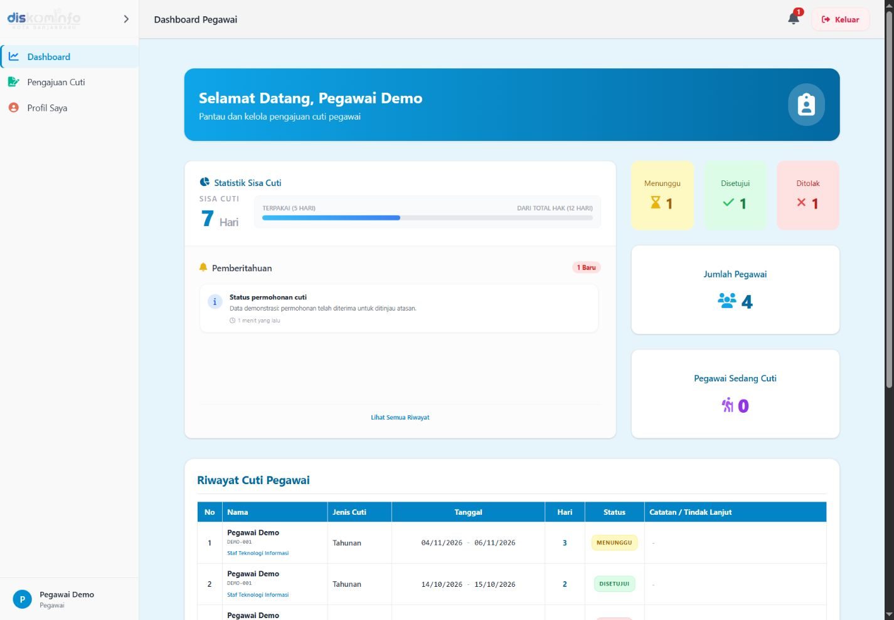
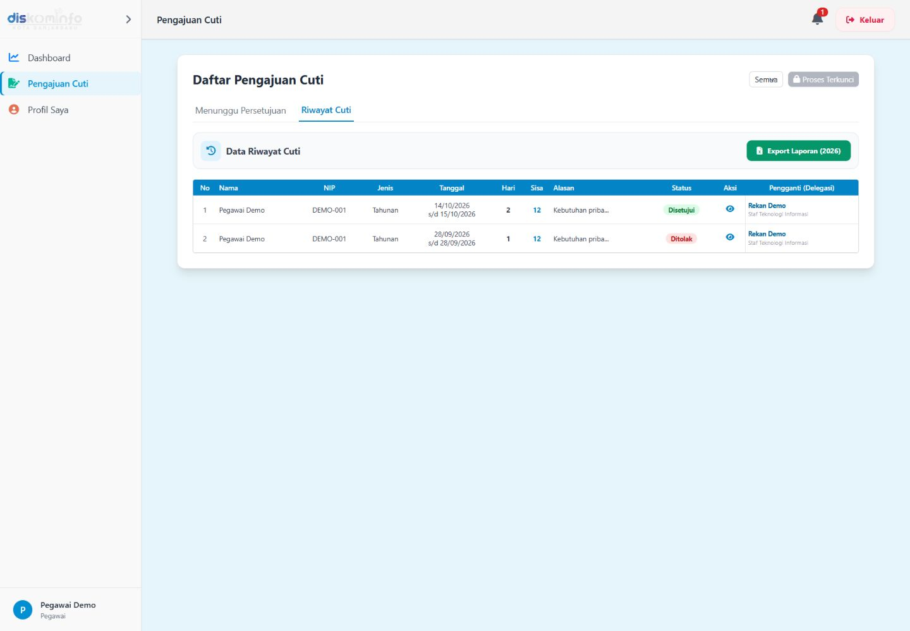

Sistem informasi pegawai · Aplikasi web
Si-Cuti · PKL Kominfo
Mengajukan cuti tanpa kehilangan jejak persetujuan. Si-Cuti membantu pegawai dan pengelola Diskominfo Kota Banjarbaru memeriksa permohonan, delegasi tugas, dan riwayat cuti.
- Konteks proyek
- Proyek Praktik Kerja Lapangan di Diskominfo Kota Banjarbaru.
- Untuk siapa
- Pegawai, atasan langsung, pejabat pemberi persetujuan, dan administrator.
- Kontribusi saya
- Pengembangan aplikasi web dalam konteks PKL Diskominfo. Lingkup mencakup alur pegawai, pembagian hak akses, persetujuan, serta dokumen dan laporan.
Dokumentasi


Dashboard pegawai
Tampilan asli ringkasan sisa cuti, pemberitahuan, dan status permohonan. Seluruh identitas serta angka pada screenshot adalah data demonstrasi.

Formulir pengajuan cuti
Formulir asli memperlihatkan data pegawai, jenis cuti, periode, alasan, dan pengganti tugas sebelum permohonan dikirim.


Riwayat & laporan cuti
Tampilan riwayat asli membantu pegawai meninjau hasil persetujuan serta mengakses rekap laporan. Data yang terlihat dibuat khusus untuk preview.
Mengapa proyek ini dibuat?
Masalahnya
Pengajuan perlu memeriksa kuota, bentrok tanggal, hari kerja, dan pengganti tugas sebelum diteruskan ke pejabat.
Pendekatannya
Pengajuan dan persetujuan berjenjang dicatat dalam satu aplikasi, lengkap dengan riwayat, pemberitahuan status, dan dokumen rekap.
Yang bisa dilakukan pengguna
-
Pengajuan & delegasi tugas
Pegawai menentukan rentang cuti dan rekan pengganti untuk menjaga pekerjaan tetap berjalan.
-
Validasi hari kerja
Hari libur dan akhir pekan diperhitungkan, serta bentrok pengajuan diperiksa.
-
Persetujuan berjenjang
Atasan langsung dan pejabat meninjau permohonan sesuai kewenangannya.
-
Riwayat & laporan
Status, sisa kuota, serta laporan PDF dan Excel membantu pemantauan administrasi.
Teknologi
- Laravel
- PHP
- MySQL
- Tailwind CSS
- Alpine.js
- DomPDF / Excel